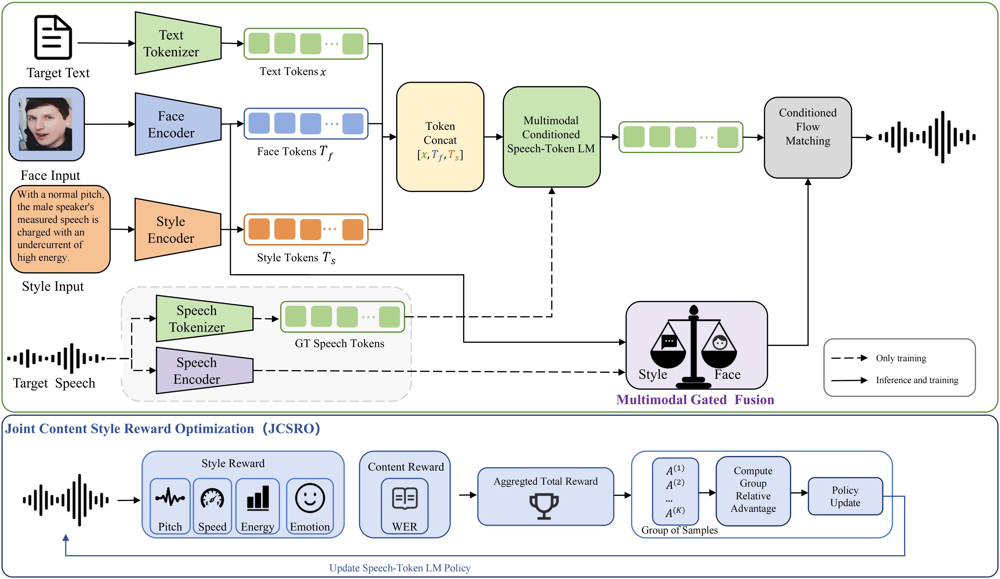

Abstract
Recent advances in zero-shot TTS enable speech synthesis for unseen speakers from short reference recordings. However, reference speech may not always be available, motivating controllable TTS from non-speech conditions. Existing approaches typically rely on either face images for speaker timbre modeling or style instructions for attribute and style control. These conditions differ in their granularity and control mechanism: faces provide implicit instance-level timbre cues, whereas instructions provide explicit attribute-level timbre constraints and dynamic style control. Jointly modeling them remains challenging due to the lack of aligned face-instruction-speech data and their heterogeneous information.
To address these issues, we propose a unified multimodal TTS framework that supports face-only, instruction-only, and joint face- and instruction-conditioned speech generation. We first develop an automatic data construction pipeline and construct FaceStyleSpeech, an aligned dataset of face images, style instructions, and speech. We then introduce a multimodal gated fusion module that adaptively coordinates the relative contributions of face and instruction conditions, enabling a better balance between speaker-timbre preservation and speaking-style control. Furthermore, we propose Joint Content-Style Reward Optimization (JCSRO), which jointly incorporates content and style rewards to improve speaking expressiveness while preserving linguistic content. Experimental results demonstrate that the proposed framework achieves competitive performance across face-only, instruction-only, and joint conditioning, while providing effective control over speaker timbre and speaking style.
Pipeline

Overview of the unified multimodal TTS framework with face-only, instruction-only, and joint face-instruction conditioned generation.
Speech Samples
1. Only Face
Speech is generated from the face condition and text content. The table compares FaceTTS, FVTTS, SYNTHE-SEES, and our face-only model.
| Face | Content | FaceTTS | FVTTS | SYNTHE-SEES | Ours |
|---|---|---|---|---|---|
| and how your tone shapes the rest of your communication. | |||||
| Welcome back to my channel. In today's video, I'll be touching on two traumas and core wounds that. | |||||
| wrapping up things on my corporate job, post maternity leave, I quit. My dream life officially. | |||||
| could say, we stan Harry Styles. That means we love him. We're a fan of his. To bail. | |||||
| Hey everybody, it's me, Pavel here. | |||||
| Um, post, comment, com- post, comment. | |||||
| just go to outsourcingangel.com discovery or click the link in the description below to book a free. |
2. Only Instruction
Speech is generated from the instruction and text content. The table keeps the same baseline columns and compares against our instruction-only model.
| Instruction | Content | Salle | PromptTTS++ | ParlerTTS | VoxInstruct | Ours |
|---|---|---|---|---|---|---|
| In a clearly happy tone, the female speaker speaks quickly yet gently, with light energy and an easy, buoyant warmth. | So just always have that mindset and if you guys find these videos helpful. | |||||
| With bright delight, the female speaker sounds exuberant and lively, using a high voice and sparkling energy throughout. | And if you're anything like me, I think you're gonna like this planner. | |||||
| With bright, unmistakable happiness, the male speaker sounds young and lively, speaking at a normal pace with high energy. | 27% of my best days happen because I did something fun. | |||||
| This male speaker sounds warmly upbeat and distinctly joyful, speaking with lively adult confidence and an easy, infectious smile in the voice. | because that's where the joy is. | |||||
| In a sharp, high-pitched tone, the female speaker sounds intensely angry, delivering the line with forceful adult conviction. | The supernatural manifestations of the glory of God. It's time to believe him. | |||||
| With bright, infectious happiness, the female speaker delivers the line in an energetic adult voice at a natural pace. | Yeah, so I've got my Christmas jumper on. | |||||
| In a youthful, clearly sad tone, the female speaker speaks with steady pacing and calm, natural energy. | It is just doing the things that you don't like. | |||||
| With bright, infectious happiness, the male speaker sounds young and lively, speaking at a normal pace with a high, energetic voice. | So to generate subtitles, I go to this app and from here you can generate subtitles automatically, that too for free. |
3. Face + Instruction
Speech is generated from the face condition, instruction, and text content. The table compares MMCS with our joint model.
| Face | Instruction | Content | MMCS | Ours |
|---|---|---|---|---|
| With bright, youthful excitement, the female speaker sounds vividly happy and energetic, delivering the line with lively, upbeat warmth. | to start writing me and Leanne and Kath are so excited to get working on those for you but yes. | |||
| In a high, trembling tone, the male speaker sounds distinctly fearful, speaking with palpable anxiety and fragile, wavering intensity. | Some people think it's a fantasy. | |||
| In a low, sorrowful tone, the male speaker speaks with clear sadness and a heavy, subdued presence. | child doesn't have to care for me for the final five years ten years of my. | |||
| In a clearly surprised tone, the female speaker speaks slowly with a high, bright voice and steady, natural energy. | you're considering suicide. | |||
| With bright, expressive happiness, the female speaker delivers the line in a lively adult manner, quickly paced yet gently calm. | So go check out the other videos, and I hope you guys got something out of this. | |||
| A female speaker delivers the line with bright, youthful happiness, sounding warmly animated while keeping a natural pitch and steady pace. | I basically just sat around with my family. | |||
| With bright, unmistakable happiness, the female speaker speaks quickly in a lively, high-pitched voice full of cheerful energy. | I don't know why last year, in 2024, I thought I could do three. | |||
| In a bright, unmistakably happy tone, the female speaker speaks quickly with natural adult warmth and steady, balanced energy. | beneficial in your family? I'd love to hear from you. If you enjoyed this video, please hit that. | |||
| With bright enthusiasm, the male speaker delivers the line at a lively pace, sounding joyful, energetic, and distinctly adult. | My book is finally here, and to celebrate, I wanted to wait to do this video until the. | |||
| With bright, exuberant joy, the female speaker sounds lively and animated, speaking quickly in a naturally high, upbeat voice. | Yeah, I'm always picking the like emotional moving ones. | |||
| With bright, unmistakable happiness, the female speaker speaks quickly in a calm adult voice with natural pitch and gentle energy. | And we do like testing in our family. | |||
| A male speaker delivers the line with bright, exuberant warmth and lively momentum, sounding genuinely happy and energetically engaging. | It's a fun thing that I like talking about it. | |||
| This male speaker has an older, low-pitched voice, speaking with steady warmth and calm, seasoned assurance. | So my wife would share, and then I had to repeat back exactly what she said. |